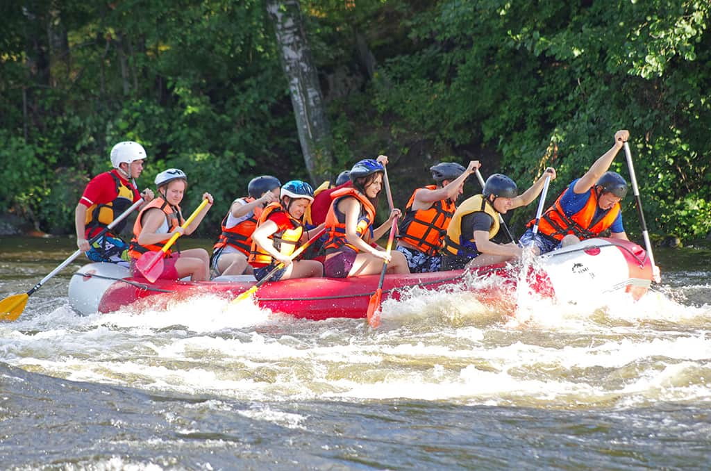
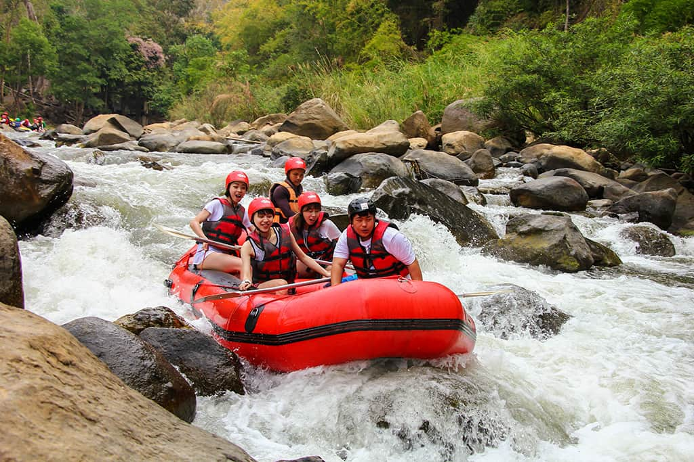
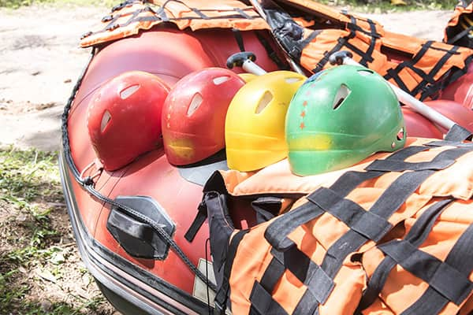
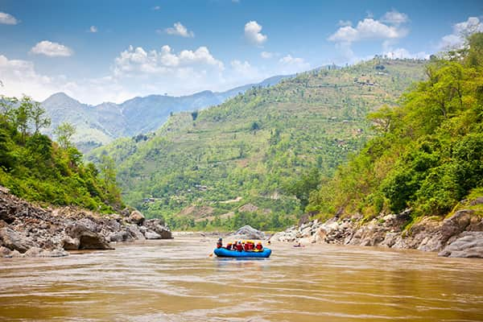
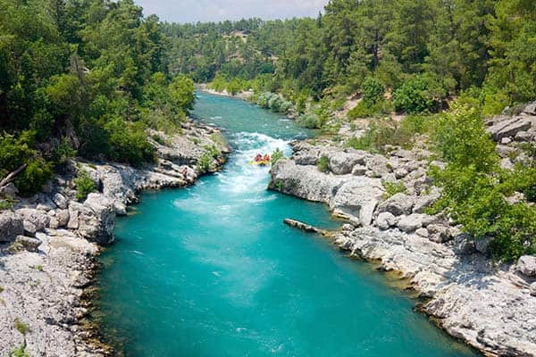
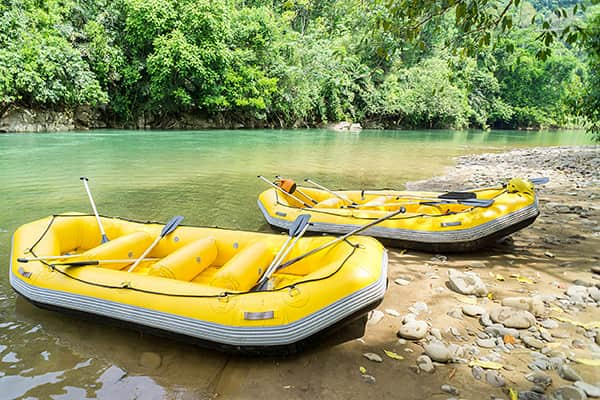

Nile River Explorers

At Nile River Explorers, our purpose is to awaken the spirit of adventure and connect people to the raw power and beauty of the Nile. Our mission is to deliver unforgettable white water rafting experiences .
History
Founded in the early 2000s along the legendary Nile, Nile River Explorers began as a small group of passionate adventurers with a shared dream of exploring untamed waters. What started with a single raft and a handful of thrill-seekers quickly grew into a renowned white water rafting company known for its energy, safety, and unforgettable experiences.
Through seasons of roaring rapids and calm currents, the company expanded its team, refined its techniques, and built a reputation for excellence. Guided by a spirit of curiosity and a deep respect for the river, Nile River Explorers continues to evolve, blending tradition with innovation in every expedition.
Adventure Awaits You!




